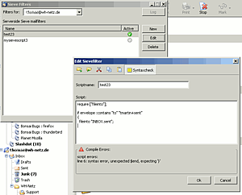
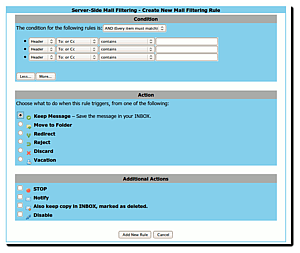

sieve
Archivierte Anleitung
Dieser Artikel wurde archiviert, da er - oder Teile daraus - nur noch unter einer älteren Ubuntu-Version nutzbar ist. Diese Anleitung wird vom Wiki-Team weder auf Richtigkeit überprüft noch anderweitig gepflegt. Zusätzlich wurde der Artikel für weitere Änderungen gesperrt.
Artikel für fortgeschrittene Anwender
Dieser Artikel erfordert mehr Erfahrung im Umgang mit Linux und ist daher nur für fortgeschrittene Benutzer gedacht.
Zum Verständnis dieses Artikels sind folgende Seiten hilfreich:
sieve ist ein skriptbasierter Mailfilter mit sehr umfangreichen Möglichkeiten. Obwohl mit websieve eine graphische Oberfläche installiert werden kann, hat die Vorgehensweise über eine Textdatei und Konsole entscheidende Vorteile. So kann man die Filterregeln auch zu einem späteren Zeitpunkt einfacher ordnen und hat mehr Kontrolle über die Syntax.
Installation¶
Sieve wird bereits mit Cyrus IMAPD installiert. Die erfolgreiche Konfiguration und Inbetriebnahme von Cyrus IMAPD wird an dieser Stelle vorausgesetzt. Ansonsten ist Sieve natürlich auch mit Dovecot verwendbar - eine Möglichkeit über den pythonbasierten Sieve-Daemon pysieved  findet man im Beitrag Pysieved on workaround mail .
findet man im Beitrag Pysieved on workaround mail .
Benutzerdefiniertes Regelwerk¶
Sieve ist ein leistungsfähiger Mailfilter, der benutzerabhängig ist. Da jeder Nutzer eigene Filterregeln entsprechend seiner Bedürfnisse hat, ist dieses Vorgehen sinnvoll. Deshalb wird hier nur beispielhaft erläutert, welche Filterregeln existieren und wie diese in der Skriptsprache aufgestellt werden. Die Abfragen erfolgen mit if ... elsif ... else, so dass eine hierarchische Filterung möglich und sinnvoll ist. Die komplette Syntax und Erläuterungen sind unter den Links angegeben.
Normalerweise erwartet sieve die Filterregeln im Verzeichnis /var/spool/sieve. Dieses Verzeichnis erfordert aber andere Rechte, deshalb bietet es sich an, eine versteckte Textdatei .sieve-mail-filter im Heimatverzeichnis zu erstellen [1], um sie vor versehentlichen Zugriffen zu schützen.
Hinweis:
Gewöhnlich ist man auf einem Server/ virtuellen Server als root eingeloggt. Mit
su - Benutzername
in die shell des Benutzers wechseln. Man landet im Home-Verzeichnis des Benutzers. Nach dem Einrichten von Sieve
exit
eingeben.
Dateiheader¶
Im Kopf der Textdatei wird sieve mitgeteilt, welche Module benötigt werden. Kommentare werden durch eine Raute (#) eingeleitet oder durch Slash und Asterisk (/* Kommentar */) eingeschlossen.
# Datum, User require "fileinto"; /* Modul zur Verschiebung der Mails, immer erforderlich */ require "reject"; /* Modul zur Zurückweisung, optional */ require "vacation"; /* Modul für Abwesenheitsbenachrichtigungen, optional */
Mails in Ordner verschieben¶
fileinto verschiebt Mails in die angegeben Unterordner. Filtern lässt sich nach verschiedenen Schlüsselwörtern. anyof stellt dabei eine ODER-Verknüpfung dar, allof eine UND-Verknüpfung.
# Mails verschieben
if header :contains "from" ["ebay.de", "ebay.com"] { fileinto "INBOX.ebay"; }
elsif header :contains "subject" "Ltsp-discuss" { fileinto "INBOX.mailinglisten.ltsp"; }
elsif header :contains "subject" "Capisuite-users" { fileinto "INBOX.mailinglisten.capisuite"; }
elsif allof (header :contains "from" "zitate.at", header :contains "subject" "Zitat des Tages")
{ fileinto "INBOX.mailinglisten.zitate"; }
else { fileinto "INBOX"; }Mails zurückweisen¶
Falls Mails ab einer bestimmten Größe zurückgewiesen werden sollen, verwendet man reject:
# mails zurückweisen
if size :over 10M { reject;}Um Mails von Spammern zurückzuweisen, empfiehlt sich ein Spamfilter oder das Löschen der Mails mit discard:
if header :contains "subject" "viagra" { discard; }Ein tatsächliches Zurückweisen hätte zur Folge, dass der Spammer durch die Rückmeldung die Echtheit der Adresse bestätigt bekommt.
Damit reject keine Fehlermeldung produziert, muss in der Datei /etc/postfix/master.cf folgende Zeilen wie folgt geändert werden [1]:
#flags=R user=cyrus argv=/usr/sbin/cyrdeliver -e -m ${extension} ${user}
#folgende zeile ersetzt obere zeile, um reject funktion zu ermöglichen
flags= user=cyrus argv=/usr/sbin/cyrdeliver -r ${sender} -m ${extension} ${user}Automatische Abwesenheitsnachrichten¶
Bei Abwesenheit (z.B. Urlaub), wenn man keine Mails beantworten kann, verschickt sieve automatisch eine Standardantwort. Ein bestimmter Absender erhält nur eine einzige Abwesenheitsbenachrichtigung, auch wenn er mehrere E-Mails schickt. Eine weitere Benachrichtigung erhält er erst wieder nach sieben Tagen. Will man diesen Wert ändern, so dass bis zur nächsten Benachrichtigung z.B. 14 Tage gewartet wird, so benutzt man dafür die Option :days <Anzahl Tage>, die vor der Option :addresses eingefügt wird. Die Abwesenheitsfunktion erfordert im Dateikopf das Modul vacation:
# Abwesenheitsnachrichten vacation :days <Anzahl Tage> :addresses ["Adresse1", "Adresse2"] "Text";
Aktivierung von Sieve¶
Die Datei muss noch entsprechend aktiviert werden. Nach Aufruf von sieveshell im Terminal [2]
sieveshell -u BENUTZERNAME localhost
wird die Eingabe des IMAP-Kennworts des Nutzers verlangt. Danach kann man die Konfigurationsdatei hochladen:
put .sieve-mail-filter activate .sieve-mail-filter quit
Bei fehlerhafter Syntax erhält man eine Fehlermeldung mit einer Zeilenangabe, so dass sich die Fehlersuche einfach gestaltet. help listet die verfügbaren Kommandos und Erläuterungen zu sieveshell.
Hinweis:
Sollte die nachfolgende Fehlermeldung auftauchen:
unable to connect to server at /usr/bin/sieveshell line 179, <STDIN> line 1\\
und damit die Verbindung zur sieveshell scheitern, hilft folgendes:
adduser cyrus mail #(soweit noch nicht beim Einrichten von cyrus erfolgt) chown root:mail -R /var/spool/sieve chmod 770 -R /var/spool/sieve
Für jeden Nutzer muss das entsprechende benutzerspezifische Regelwerk aktiviert werden.
Grafische Helfer zum Konfigurieren der Sieve-Skripte¶
Zumindest, wenn man pysieved verwendet - welcher als Daemon läuft - hat man den Vorteil, dass man clientseitig konfigurieren kann, ohne SSH-Zugriff oder dergleichen auf den Server haben zu müssen. Folgende E-Mail-Clients können zum konfigurieren genutzt werden (kein Anspruch auf Vollständigkeit):
Thunderbird¶
Unter Thunderbird ist das Sieve-Skript mit dem Sieve Plugin möglich (alternativ auch auf der Mozilla-Thunderbird-Plugin-Seite ):

Squirrelmail (Webmailer)¶
Wenn man als Webmailer Squirrelmail verwendet, gibt es auch ein sehr gutes Plugin namens AvelSieve , bei dem man wahlweise textbasiert, umgangssprachlich oder grafisch seine Sieve-Filter konfigurieren kann:


- Erstellt mit Inyoka
-
 2004 – 2017 ubuntuusers.de • Einige Rechte vorbehalten
2004 – 2017 ubuntuusers.de • Einige Rechte vorbehalten
Lizenz • Kontakt • Datenschutz • Impressum • Serverstatus -
Serverhousing gespendet von